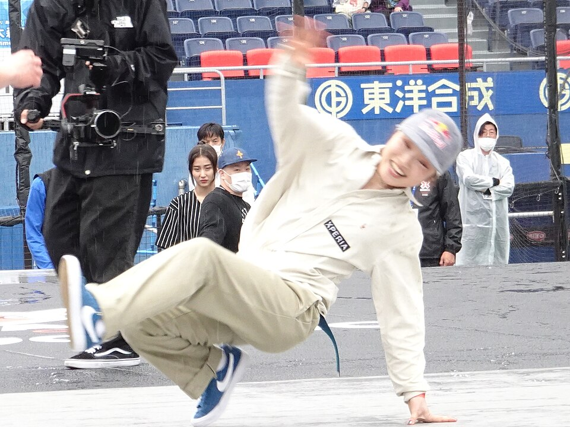

アーバンスポーツ
•
ブレイキン / B-Girl（女子）
アミ / ゆあさ あみ
AMI（湯浅 亜実）
AMI / Ami Yuasa
🏢 所属: Good Foot Crew
🏅 パリ五輪金メダル（初代女王）🏅 世界選手権2度制覇🏅 Red Bull BC One女王
流れるようなフットワークと尽きないクリエイティビティ！五輪初代女王が魅せる本物のダンス
愛知・名古屋2026 今大会最終結果
出場予定（10月2日 開幕）🎯
パリ五輪初代金メダリスト
【最新・出場直前】五輪初代女王として臨むアジア大会。競技は10月2日〜3日に行われる予定で、持ち前の滑らかなステップと独創的なフロアワークで金メダルを目指す。
🎬 最後のシーン（決定的瞬間・ハイライト）
軽やかで力強いフットワークと独創的なムーブで世界を魅了するAMIの最新インタビュー＆練習シーン。
▶️ 【YouTube】パリ五輪金メダルの歓喜＆アジア大会へ向けた最新トレーニング を見る
📊 公式トーナメント表・競技記録速報（Draw/Results）
ブレイキン女子 バトルラウンドロビン＆決勝トーナメント表
📊 【世界ダンススポーツ連盟 (WDSF) / JDSF】WDSF公式 バトルブラケット表 を見る ➔
経歴・これまでの歩み
11歳でヒップホップを始め、姉の影響でブレイキンへ転向。2018年に初代Red Bull BC One B-Girlチャンピオンに輝く。2019年・2022年の世界選手権を制覇。2024年パリ五輪では持ち前のフローと確かな技術でコンコルド広場を熱狂させ、ブレイキン初代五輪金メダリストの栄誉を手にした。
主要大会ハイライト戦績
2024年
パリオリンピック
B-Girl 初代金メダル
2023年
杭州アジア大会
銀メダル
2022年
ソウル世界選手権
金メダル
プレイスタイル＆世界を制する武器
ステップを踏みながら床と一体化するようなシームレスなフットワークと、独自性の高いオリジナルトリック。音楽に身を委ねる心地よいグルーヴが審査員の心を掴みます。
専門家・メディアによる客観的分析・批評
✨
強み・世界トップ水準の評価
ブレイキン五輪初代女王。床と対話するかのようなシームレスなフットワークと、オリジナリティあふれるヒップホップグルーヴは世界のB-Girlのお手本。
出典・ソース:
WDSF公式レビュー / コンコルド広場国際審査員
⚠️
課題・懸念される客観的事実
アクロバティックなパワームーブを連発する力技タイプの対戦相手と当たった際、審査員の採点基準によって接戦になりやすい点。
出典・ソース:
ブレイキン専門解説
愛知・名古屋2026への決意とメッセージ
大会スケジュール＆観戦のツボ
🗓️ 出場予定日程・会場
2026年9月26日 予選 / 9月27日 決勝
👀 観戦の注目ポイント
足さばきの繊細さと音ハメの心地よさ。技と技のつなぎ目の美しさに注目。